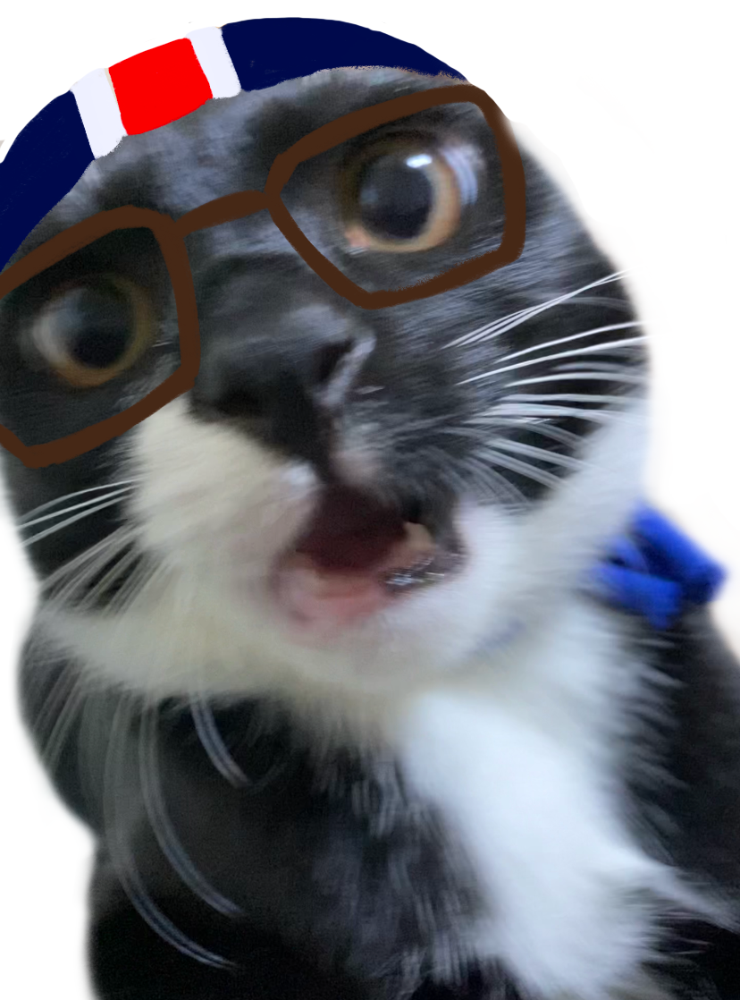

🏆
2021
베스트짤


풀네임은 최류탄이에요.
최씨와 류씨의 성을 물려받았죠.
나이는 11개월이고 성별은 중성이랍니다. 가장 좋아하는 음식은 역시 츄르에요. 탄이는 창밖을 보며 사색하는 것을 좋아한답니다.
애착인형은 I♥NY 곰인형이에요.
그렇습니다.
탄이는
귀엽고
사랑스럽죠.
하지만 그런 탄이에게도
시련이 있었으니...
중성화
묘생 5개월 차, 탄이는 맛있는 돈까스를 사준다는 말에 집사를 따라나선다. 도착한 곳은 다름 아닌 병원. 결국 눈물을 흘리며 땅콩을 제거하게 되는데.. 마취가 풀린 뒤 탄이는 내내 하악질을 하고 반나절 동안 식음을 전폐하며 커튼 뒤에 숨어 나오지 않았다..
우당탕탕
피아노 대소동
내 방에는 피아노가 있다. 책상과 이어져 있는데, 어느 날 탄이가 책상에 올려둔 컵을 발로 밀어 피아노 방향으로 쏟은 것이다. 그 피아노는 오빠가 구매했고, 산 지 6개월도 안되어 나와 오빠에게 아주 소중한 피아노였다. 슬퍼하기도 잠시, 나는 가족들에게 들키지 않게 얼른 방문을 잠그고 사고를 수습했다. 50여개가 되는 나사를 제거하고 회로와 건반 하나하나를 분리해 틈새로 들어간 물을 닦았다. 피아노는 꼬박 이틀을 드라이기와 제습기로 말렸고, 정말 다행히도 작동이 잘 된다! (오빠는 이 일을 지금도 모른다)
아이패드
최류탄 에디션
탄이는 집에 있는 모든 물건을 한 번씩 씹어봐야만 한다.
내 아이패드도 예외는 아니었다. 이전에 아이패드를 케이스째 씹은 적이 있어서 이제는 안 씹겠지 하고 방심하던 찰나, 탄이는 패드를 물었다. 정말로 '뚝'하고 소리가 나더니 액정을 가로지르며 금이 갔다.. 나는 화질구지가 싫어서 액정필름도 안 붙여놨는데.. 눈물이 찔끔 났다. 소 잃고 외양간 고치는 격으로 뒤늦게 깨진 액정에 강화유리를 붙여 수습해서 쓰고 있다.
여기서 끝내긴 아쉽죠?
그래서 준비했습니다.
🏆
2021
베스트짤